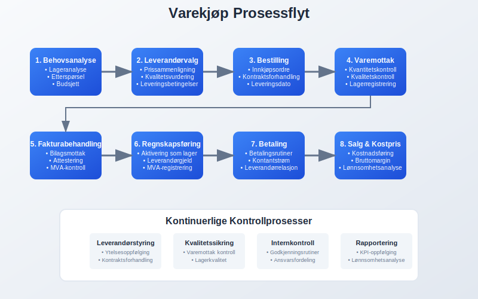
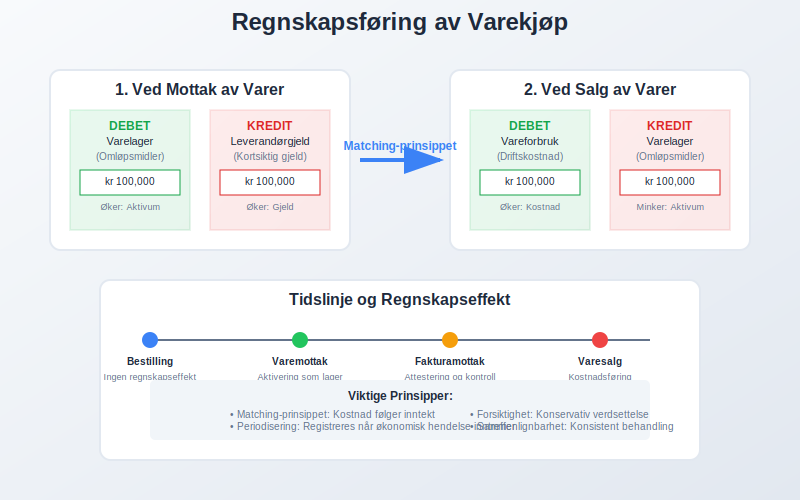
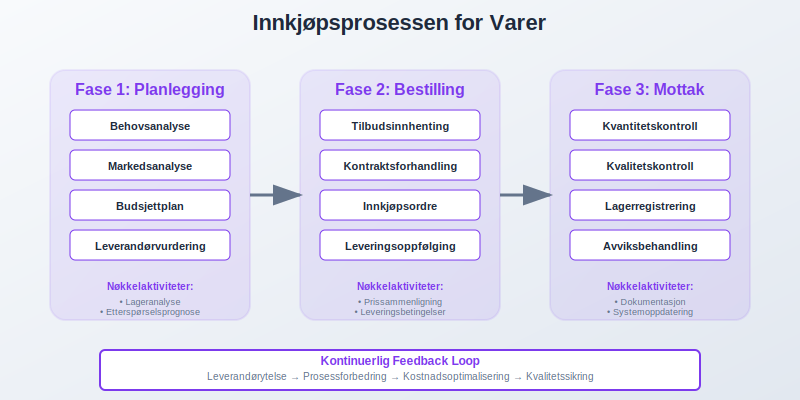
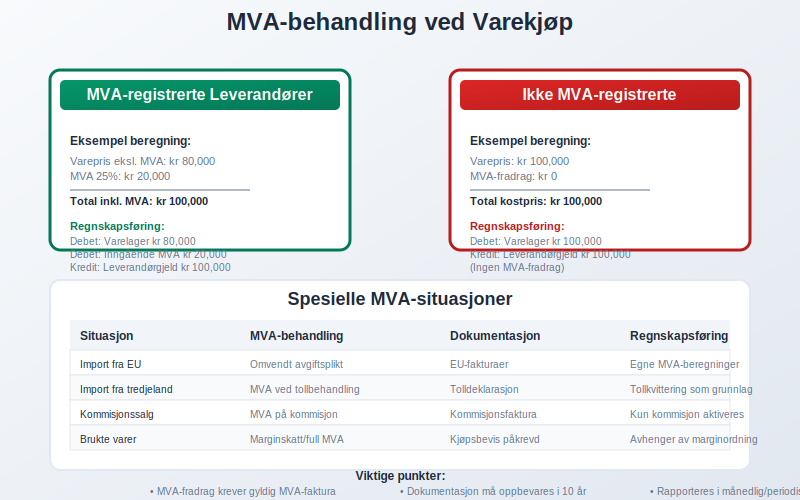
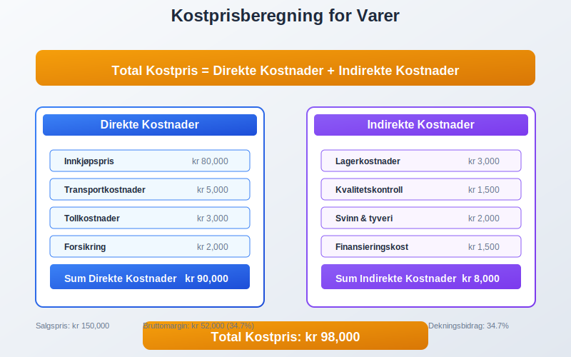
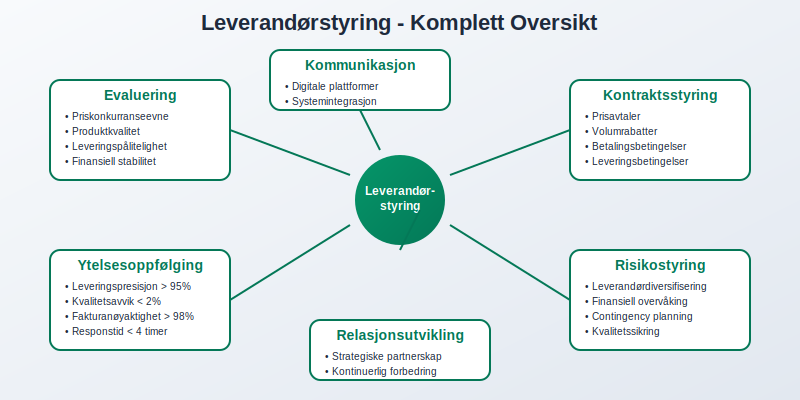
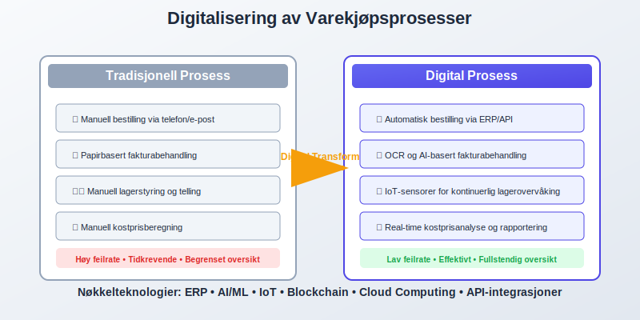
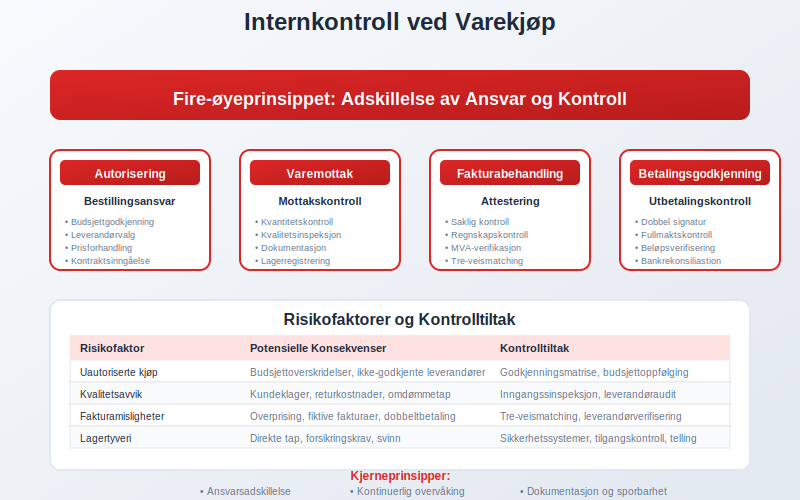
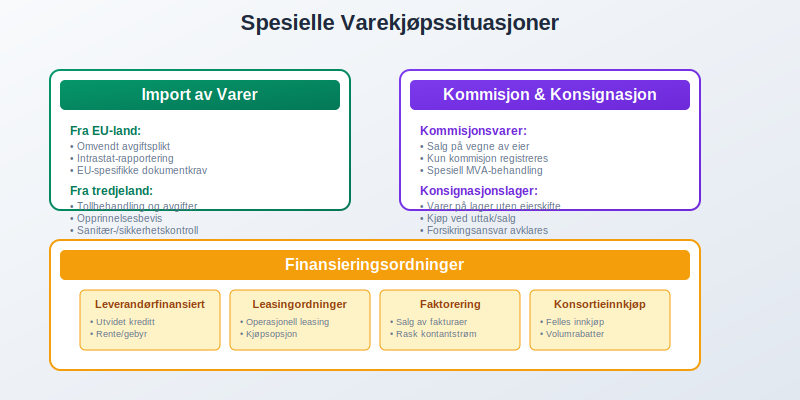
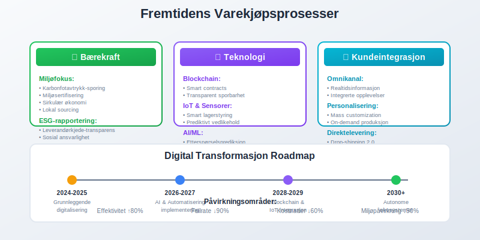

Varekjøp er anskaffelse av varer som skal selges videre til kunder, og utgjør en av de største kostnadene for handelsvirksomheter. Dette er varelager som kjøpes inn for videresalg og representerer bedriftens omløpsmidler. Korrekt håndtering av varekjøp påvirker direkte bedriftens lønnsomhet, arbeidskapital og lagerbeholdning. For nøyaktig kostnadsstyring er det kritisk å forstå alle komponenter i varekostnad, som inkluderer både direkte og indirekte kostnader knyttet til innkjøp. Effektiv styring av varekjøp krever systematisk anskaffelsesstyring og god forståelse av regnskapsmessige konsekvenser.
Seksjon 1: Grunnleggende om Varekjøp
Varekjøp skiller seg fra andre innkjøp ved at varene er ment for videresalg, ikke for eget forbruk i virksomheten. Dette påvirker både regnskapsføring og skattemessig behandling. Når varer kjøpes inn, aktiveres de først som lagerbeholdning før de kostnadsføres når de selges videre.

Karakteristika ved Varekjøp
Varekjøp har flere unike egenskaper som skiller dem fra andre typer innkjøp:
- Videresalgshensikt: Varene kjøpes med det formål å selge dem videre til kunder
- Lagerpåvirkning: Øker bedriftens lagerbeholdning når de mottas
- Kostnadsføring: Kostnadsføres først når varene selges (matching-prinsippet)
- MVA-behandling: Spesielle regler for merverdiavgift på varekjøp
Forskjell på Varekjøp og Andre Innkjøp
| Innkjøpstype | Hensikt | Regnskapsføring | Påvirkning |
|---|---|---|---|
| Varekjøp | Videresalg | Aktiveres som lager | Øker omløpsmidler |
| Driftsmidler | Egen bruk | Aktiveres som anleggsmidler | Øker anleggsmidler |
| Driftskostnader | Forbruk | Direkte kostnadsføring | Påvirker driftsresultat |
| Råvarer | Produksjon | Del av produksjonskost | Inngår i varelageret |
Seksjon 2: Regnskapsføring av Varekjøp
Regnskapsføring av varekjøp følger spesifikke prinsipper som sikrer korrekt presentasjon av bedriftens økonomiske stilling. Prosessen starter med mottak av fakturaer fra leverandører og krever nøyaktig attestering før bokføring.

Grunnleggende Bokføringsprinsipper
Ved mottak av varer følges matching-prinsippet hvor kostnaden først aktiveres som lager og deretter kostnadsføres når varene selges:
Ved mottak av varer:
Debet: Varelager (omløpsmidler)
Kredit: Leverandørgjeld (kortsiktig gjeld)
Ved salg av varer:
Debet: Vareforbruk/Kostpris solgte varer
Kredit: Varelager
Periodisering og Avstemming
Korrekt periodisering av varekjøp krever nøyaktig timing mellom varelevering og fakturaregistrering. Dette sikres gjennom:
- Varemottak: Dokumentasjon av mottatte leveranser
- Leverandørreskontro: Systematisk oppfølging av leverandørgjeld
- Lageropptelling: Regelmessig kontroll av fysisk lagerbeholdning
- Avstemming: Sammenligning av systemregistreringer med faktiske verdier
Seksjon 3: Innkjøpsprosessen
En strukturert innkjøpsprosess sikrer optimal kostnadseffektivitet og kvalitet på varekjøp. Prosessen starter ofte med evaluering av tilbud fra ulike leverandører og ender med mottak og betaling av varer.

Fasen 1: Planlegging og Behovsanalyse
Effektiv innkjøpsplanlegging inkluderer:
- Behovsanalyse: Vurdering av hvilke varer som trengs og i hvilke mengder
- Budsjettplanlegging: Sikring av tilstrekkelig likviditet for innkjøp
- Leverandørevaluering: Vurdering av pris, kvalitet og leveringsevne
- Kontraktsforhandling: Forhandling av priser, leveringsbetingelser og betalingstermer
Fasen 2: Bestilling og Oppfølging
- Bestillingsrutiner: Formaliserte prosedyrer for innkjøpsordrer
- Leveringsoppfølging: Kontroll av leveringstider og produktkvalitet
- Fakturabehandling: Bilagsmottak og verifikasjon
- Betalingshåndtering: Punktlig betaling for å opprettholde gode leverandørforhold
- Kontantkjøp: Direkte betaling ved levering med kontanter; se Kontantkjøp
Fasen 3: Mottak og Kontroll
Kvalitetskontroll ved mottak omfatter:
- Kvantitetskontroll: Verifisering av antall mottatte varer
- Kvalitetskontroll: Kontroll av varestandard og spesifikasjoner
- Dokumentasjon: Registrering av varemottak i lagersystem
- Avviksbehandling: Håndtering av feil leveranser eller mangler
Seksjon 4: MVA-behandling ved Varekjøp
Merverdiavgift på varekjøp behandles ulikt avhengig av leverandørens MVA-status og varetype. For MVA-registrerte virksomheter kan MVA på varekjøp normalt fradras som inngående merverdiavgift.

MVA-registrerte Leverandører
Ved kjøp fra MVA-registrerte leverandører:
- Fullt MVA-fradrag: Inngående MVA kan trekkes fra utgående MVA
- Dokumentasjonskrav: Korrekt faktura med MVA-spesifikasjon kreves
- Rapporteringsplikt: MVA rapporteres i MVA-oppgaven
Ikke-MVA-registrerte Leverandører
Ved kjøp fra ikke-MVA-registrerte leverandører:
- Ingen MVA-fradrag: Kostprisen inkluderer eventuelle avgifter
- Høyere innkjøpskost: Påvirker lønnsomhetsberegninger
- Enklere administrasjon: Mindre administrativt arbeid
Spesielle MVA-regler
| Situasjon | MVA-behandling | Dokumentasjon |
|---|---|---|
| Import fra EU | Omvendt avgiftsplikt | Importdokumentasjon |
| Import fra tredjeland | MVA ved tollbehandling | Tolldeklarasjon |
| Brukte varer | Spesielle marginregler | Kjøpsbevis |
| Kommisjonssalg | MVA på kommisjon | Kommisjonsfaktura |
Seksjon 5: Kostprisberegning og Lønnsomhetsanalyse
Korrekt kostprisberegning er fundamentalt for lønnsomhetsanalyse og prissetting av varer. Kostprisen omfatter ikke bare innkjøpsprisen, men også alle direkte og indirekte kostnader knyttet til å få varene klare for salg.

Komponenter i Kostprisen
Direkte kostnader:
- Innkjøpspris: Grunnprisen fra leverandør
- Transportkostnader: Frakt og ekspedisjonsgebyrer
- Tollkostnader: Toll og avgifter ved import
- Forsikring: Vareforsikring under transport
Indirekte kostnader:
- Lagerkostnader: Husleie, lagerarbeid og administrasjon
- Kvalitetskontroll: Kostnader for testing og inspeksjon
- Svinn og tyveri: Estimerte tap på lagerbeholdning
- Finansieringskostnader: Rentekostnader på lagerbinding
Lønnsomhetsanalyse
Effektiv lønnsomhetsanalyse krever systematisk oppfølging av:
- Bruttomargin: Differanse mellom salgspris og kostpris
- Lageromsetning: Hvor raskt varene selges
- Arbeidskapitalbinding: Kapital bundet i lagerbeholdning
- Sesongvariasjoner: Endringer i etterspørsel gjennom året
Seksjon 6: Leverandørstyring og Forhold
Gode leverandørforhold er kritisk for successful varekjøp. Dette krever systematisk evaluering, oppfølging og utvikiling av leverandørpartnere. Effektiv leverandørgjeld-håndtering sikrer gode betalingsbetingelser og tilgang til kreditt.

Leverandørevaluering og Utvelgelse
Evalueringskriterier for leverandører:
- Priskonkurranseevne: Sammenligning av priser og betalingsbetingelser
- Produktkvalitet: Konsistent leveranse av varer som oppfyller standarder
- Leveringspålitelighet: Evne til å levere rett vare til rett tid
- Finansiell stabilitet: Leverandørens økonomiske soliditet og framtidsutsikter
- Service og support: Tilgjengelighet og kvalitet på kundeservice
- Geografisk beliggenhet: Transport kostnad og leveringstid
Kontraktsforhandling og Betingelser
Forhandling av gunstige leverandøravtaler påvirker direkte lønnsomheten:
- Prisavtaler: Faste priser eller prisindeksering
- Volumrabatter: Reduserte priser ved større innkjøpsvolum
- Betalingsbetingelser: Lengre betalingsfrister forbedrer kontantstrøm
- Returavtaler: Mulighet for retur av uskyldige eller defekte varer
- Leveringsbetingelser: Ansvar for transport og forsikring
Leverandøroppfølging og KPI-er
Nøkkelindikatorer for leverandørytelse:
| KPI | Måleenhet | Målsetting |
|---|---|---|
| Leveringspresisjon | % rett tid | > 95% |
| Kvalitetsavvik | % defekte varer | < 2% |
| Fakturanøyaktighet | % korrekte fakturaer | > 98% |
| Responstid | Timer på henvendelser | < 4 timer |
| Kostnadsstabilitet | % prisendringer | < 5% årlig |
Seksjon 7: Digitalisering og Automatisering
Moderne varekjøpsprosesser drar nytte av digitale verktøy for å øke effektivitet, redusere feil og forbedre kontroll. Elektronisk fakturering og automatisert fakturabehandling er sentrale elementer i digitaliseringen.

ERP-systemer og Integrasjon
Enterprise Resource Planning (ERP)-systemer gir helhetlig styring av varekjøpsprosessen:
- Integrert bestillingsmodul: Automatisk generering av bestillinger basert på lagernivå
- Leverandørportaler: Elektronisk kommunikasjon med leverandører
- Automatisk varemottak: Skanning og registrering av mottatte varer
- Økonomisk integrasjon: Direkte bokføring av transaksjoner
E-handel og Digitale Markedsplasser
- B2B e-handelsplattformer: Online bestilling direkte fra leverandører
- Sammenligningstjenester: Automatisk prissammenligning på tvers av leverandører
- Digitale katalog: Elektroniske produktkataloger med prisoppdateringer
- API-integrasjoner: Automatisk datautveksling mellom systemer
Kunstig Intelligens og Automatisering
AI-drevne løsninger for varekjøp:
- Etterspørselsprediksjon: Machine learning for å forutsi fremtidig varebehov
- Prisoptimalisering: Algoritmer som optimerer innkjøpstidspunkt og -mengder
- Leverandøranalyse: Automatisk evaluering av leverandørytelse
- Anomalideteksjon: Automatisk oppdagelse av avvik i priser eller leveranser
Seksjon 8: Internkontroll og Risikostyring
Effektiv internkontroll i varekjøpsprosessen reduserer risiko for feil, misligheter og tap. Dette krever systematiske kontrollrutiner og tydelig ansvarsfordeling.

Ansvarsfordeling og Godkjenningsrutiner
Arbeidsdeling for å sikre kontroll:
- Bestillingsansvar: Autoriserte personer med budsjettansvar
- Varemottak: Uavhengig kontroll av leveranser
- Fakturabehandling: Separat attestering av regninger
- Betalingsautorisering: Godkjenning av utbetalinger på hensiktsmessige nivåer
Risikofaktorer og Kontrolltiltak
| Risikofaktor | Konsekvens | Kontrolltiltak |
|---|---|---|
| Uautoriserte kjøp | Kostnadsoverskridelser | Godkjenningsrutiner og budsjettoppfølging |
| Kvalitetsavvik | Kundeklager og tap | Systematisk kvalitetskontroll ved mottak |
| Leverandørmisligheter | Overprising og svindel | Leverandørrotasjon og markedsanalyse |
| Lagertyveri | Direkte tap | Lagerrutiner og sikkerhetstiltak |
| Valutarisiko | Kostnadsvariasjoner | Valutasikring og avtalevaluta |
Revisjonsrutiner og Oppfølging
- Interne revisjoner: Regelmessig kontroll av innkjøpsprosesser
- Leverandørrevisjoner: Besøk og evaluering av leverandørens virksomhet
- Systemkontroller: Verificering av automatiske kontroller i IT-systemer
- Benchmarking: Sammenligning med bransjestandarder og beste praksis
Seksjon 9: Spesielle Forhold ved Varekjøp
Enkelte typer varekjøp krever spesiell behandling på grunn av juridiske, skattemessige eller praktiske forhold. Dette inkluderer import, kommisjonsvarer og spesialfinansiering.

Import av Varer
Import fra EU-land:
- Omvendt avgiftsplikt: Kjøper har ansvar for MVA-innbetaling
- Intrastat-rapportering: Rapporteringsplikt for handel over visse beløpsgrenser
- Valutarisiko: Eksponering mot valutasvingninger
- Transportforsikring: Sikring mot skade under transport
Import fra tredjeland:
- Tollbehandling: Tollverdi og tollsatser
- Importlisenser: Spesielle tillatelser for enkelte varegrupper
- Opprinnelsesbevis: Dokumentasjon av varenes opprinnelse
- Sanitærkontroll: Kontroll av matvarer og andre regulerte produkter
Kommisjonssalg og Konsignasjonslager
- Kommisjonsvarer: Varer som selges på vegne av eier mot kommisjon
- Konsignasjonslager: Varer som lagres uten eierskifte før salg
- Regnskapsmessig behandling: Spesiell bokføring av kommisjonsinntekter
- Forsikringsansvar: Avklaring av ansvar for skade og tap
Finansieringsordninger
Leverandørfinansierte innkjøp:
- Utvidet kreditt: Lengre betalingsfrister mot rente eller gebyr
- Leasingordninger: Leasing av varer som senere kan kjøpes
- Faktorering: Salg av leverandørfakturaer til finansieringsselskap
- Konsortieinnkjøp: Felles innkjøp med andre virksomheter for bedre betingelser
Seksjon 10: Fremtidige Trender og Utvikling
Varekjøpsprosesser er i kontinuerlig utvikling drevet av teknologiske fremskritt, endrede kundeforventninger og miljøkrav. Forståelse av fremtidige trender er viktig for strategisk planlegging.

Bærekraft og Miljøfokus
- Miljøsertifisering: Krav til leverandørers miljøstandarder
- Karbonfotavtrykk: Vurdering av klimapåvirkning i leverandørkjeden
- Sirkulær økonomi: Fokus på gjenbruk og resirkulering
- Lokal sourcing: Reduserte transportavstander og støtte til lokalsamfunn
Teknologiske Innovasjoner
Blockchain og Sporbarhet:
- Leverandørkjede-transparens: Fullstendig sporbarhet fra produsent til kunde
- Autentisering: Bekjempelse av falske varer
- Smart contracts: Automatisk utførelse av avtaler ved oppfyllelse av kriterier
Internet of Things (IoT):
- Smart lagerstyring: Sensorer som automatisk rapporterer lagernivå
- Temperaturovervåking: Kontinuerlig overvåking av temperatursensitive varer
- Prediktivt vedlikehold: Forutsigelse av vedlikeholdsbehov på lagerutstyr
Omnikanal og Kundeintegrasjon
- Realtidsinformasjon: Kunder kan følge bestillinger fra produksjon til levering
- Personaliserte produkter: Mass customization og on-demand produksjon
- Direktelevering: Drop-shipping direkte fra leverandør til kunde
- Integrerte kunneopplevelser: Sømløs opplevelse på tvers av alle salgkanal